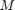
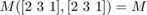
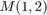
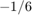

This document illustrated how RepLAB can be used to solve Semidefinite Programs (SDP) subject to symmetries.
As always, before using RepLAB commands, first add the paths:
replab_init
Commands in this document makes use ot the YALMIP interface to solve convex optimization problems, see installation instructions.
Semidefinite Programming is a form of optimization that admits semidefinite constraints (as in the condition that all eigenvalues of a matrix must be positive). It naturally arises in various fields, including operational research and polynomial optimization.
The ability to solve a semidefinite program depends heavily on:
A positive semi-definite matrix that is invariant under some joint permutation of its lines and columns can be decomposed into a block diagonal form. This allows to:
As we shows below, RepLAB performs this simplification automatically.
To illustrate the usage of RepLAB for symmetric SDPs, we consider a simple example involving a 3x3 matrix  with trace 1 that is symmetric under cyclic permutation of its indices, i.e. it satisfies . We ask what is the smallest value that the off-diagonal element  can take if this matrix has only positive eigenvalues.
Using RepLAB, we can solve this problem as follows.
We start by defining a matrix which satisfies the desired symmetry
permutation = [2 3 1];
MSym = replab.CommutantVar.fromPermutations({permutation}, 'symmetric', 'real');
We can then perform the optimization with:
constraintsSym = [trace(MSym) == 1, MSym >= 0];
diagnosticSym = optimize(constraintsSym, MSym(1,2), sdpsettings('verbose', 0));
MSymOpt = value(MSym)
MSymOpt =
0.3333 -0.1667 -0.1667
-0.1667 0.3333 -0.1667
-0.1667 -0.1667 0.3333
We find the critical value of .
At the end of this page, we discuss how this formulation is more efficient than a direct formulation which would not take advantage of the symmetry properties of the considered matrix.
An SDP matrix might sometimes be subject to more than only symmetry constraints. When these additional constraints take the form of equality between some of the matrix elements, it can be conveniently described by a matrix having at each element the index of the corresponding variable. All elements with identical index are then understood as being equal to each other.
For instance, imposing on a 3x3 matrix that elements (1,1) ans (2,1) are must be equal to each other can be described by the following index matrix:
indexMatrix = [1 2 3
1 4 5
6 7 8];
An SDP matrix satisfying this constraint is then obtained
cstrSdpMatrix = replab.CommutantVar.fromIndexMatrix(indexMatrix, {permutation}, 'symmetric', 'real')
cstrSdpMatrix =
Commutant variable 3x3 (2 blocks, 1 scalar variables)
dim: 3
dimensions1: [1, 2]
field: 'real'
matrixType: 'symmetric'
multiplicities: [1, 1]
types: 'RC'
U: [0.57735, -0.44165, -0.68674; 0.57735, -0.37391, 0.72585; 0.57735, 0.81556, -0.039114]
blocks: [1, 2]
In this trivial case, the SDP matrix is left to contain only one variable: the additional constraints collapsed the all group orbits together.
Symmetry constraints can also be straightforwardly imposed on existing SDP matrices with arbitrary structure.
For instance, consider the following special SDP matrix
x = sdpvar;
y = sdpvar
MSpecial = [1 x y
x 1 y
x y 1];
Linear scalar (real, 1 variable) Coeffiecient range: 1 to 1
We can directly impose cyclic symmetry onto this matrix:
MSpecialSym = replab.CommutantVar.fromSdpMatrix(MSpecial, {[2 3 1]})
MSpecialSym =
Commutant variable 3x3 (2 blocks, 5 scalar variables)
dim: 3
dimensions1: [1, 2]
field: 'real'
matrixType: 'full'
multiplicities: [1, 1]
types: 'RC'
U: [0.57735, 0.51966, -0.62978; 0.57735, 0.28557, 0.76493; 0.57735, -0.80523, -0.13515]
blocks: [1, 2]
linearConstraints: constraint
Requesting this matrix to be PSD now imposes both
as can be seen with
MSpecialSym >= 0
+++++++++++++++++++++++++++++++++++++++++++++++++++++++++++ | ID| Constraint| Coefficient range| +++++++++++++++++++++++++++++++++++++++++++++++++++++++++++ | #1| Element-wise inequality 1x1| 1 to 1| | #2| Element-wise inequality 4x1| 1 to 1| | #3| Equality constraint 3x3| 0.33333 to 1| +++++++++++++++++++++++++++++++++++++++++++++++++++++++++++
When an SDP matrix is invariant under the considered permutations, RepLAB can be used to block-diagonalize it. This allows imposing the positivity of the matrix through the positivity of small blocks. As an example, consider the following matrix
MInvariant = [x 1 y
y x 1
1 y x];
It is indeed invariant:
MInvariant - MInvariant(permutation,permutation)
ans =
0 0 0
0 0 0
0 0 0
But not transpose-invariant (which is necessay for PSD matrices), so we enforce it:
MInvariant = MInvariant + MInvariant'; MInvariant - MInvariant'
ans =
0 0 0
0 0 0
0 0 0
We can now block-diagonalize it by calling
MInvariantBlock = replab.CommutantVar.fromSymSdpMatrix(MInvariant, {[2 3 1]})
MInvariantBlock =
Commutant variable 3x3 (2 blocks, 2 scalar variables)
dim: 3
dimensions1: [1, 2]
field: 'real'
matrixType: 'symmetric'
multiplicities: [1, 1]
types: 'RC'
U: [0.57735, 0.12408, -0.80701; 0.57735, -0.76094, 0.29605; 0.57735, 0.63685, 0.51096]
blocks: [1, 2]
No new variable has been introduced in the new object, but the block structure has been found:
full(MInvariantBlock.blockMask)
ans =
1 0 0
0 1 1
0 1 1
The block structure is used when requesting this matrix to be PSD:
MInvariantBlock >= 0
+++++++++++++++++++++++++++++++++++++++++++++++++++++++++++ | ID| Constraint| Coefficient range| +++++++++++++++++++++++++++++++++++++++++++++++++++++++++++ | #1| Element-wise inequality 1x1| 2 to 2| | #2| Matrix inequality 2x2| 5.5511e-17 to 2| +++++++++++++++++++++++++++++++++++++++++++++++++++++++++++
To conclude, let us show in more detail why the SDP formulation of a problem is more efficient if it takes advantage of the available symmetry properties. For this, we consider again the problem described at the beginning of this page. This problem can be solved directly as follows:
M = sdpvar(3);
constraints = [trace(M) == 1, M(permutation, permutation) == M, M >= 0];
diagnostic = optimize(constraints, M(1,2), sdpsettings('verbose', 0))
MOpt = value(M)
diagnostic =
struct with fields:
yalmipversion: '20190425'
yalmiptime: 0.0596
solvertime: 0.0207
info: 'Successfully solved (SeDuMi-1.3)'
problem: 0
MOpt =
0.3333 -0.1667 -0.1667
-0.1667 0.3333 -0.1667
-0.1667 -0.1667 0.3333
Again, we find that the lowest possible value of which is compatible with the matrix having only positive eigenvalues is . However, this last SDP problem is more complex than the first one which takes into account symmetries.
The symmetric formulation of the above problem involves fewer variables and simpler constraints, as summarized in the following table:
| formulation | direct | symmetric |
|---|---|---|
| # variables | 6 | 2 |
| # equality constraints | 10 | 1 |
| size of PSD blocks | 3 | 1 and 2 |
This can be checked by examining the variables involved. In the non-symmetrized case, we have
M
Linear matrix variable 3x3 (symmetric, real, 6 variables) Eigenvalues between [-1.1465e-10,0.5] Coeffiecient range: 1 to 1
constraints
+++++++++++++++++++++++++++++++++++++++++++++++++++++++ | ID| Constraint| Coefficient range| +++++++++++++++++++++++++++++++++++++++++++++++++++++++ | #1| Equality constraint 1x1| 1 to 1| | #2| Equality constraint 3x3| 1 to 1| | #3| Matrix inequality 3x3| 1 to 1| +++++++++++++++++++++++++++++++++++++++++++++++++++++++
we see that it involves
In the symmetrized case, we have
MSym
MSym =
Commutant variable 3x3 (2 blocks, 2 scalar variables)
dim: 3
dimensions1: [1, 2]
field: 'real'
matrixType: 'symmetric'
multiplicities: [1, 1]
types: 'RC'
U: [0.57735, -0.44651, -0.68359; 0.57735, -0.36875, 0.72848; 0.57735, 0.81526, -0.044894]
blocks: [1, 2]
In other words, the matrix is made of two blocks of size 1x1 and 2x2, and involves altogether just 2 variables.
The constraints this time are
constraintsSym
+++++++++++++++++++++++++++++++++++++++++++++++++++++++++++ | ID| Constraint| Coefficient range| +++++++++++++++++++++++++++++++++++++++++++++++++++++++++++ | #1| Equality constraint 1x1| 1 to 2| | #2| Element-wise inequality 1x1| 1 to 1| | #3| Matrix inequality 2x2| 1 to 1| +++++++++++++++++++++++++++++++++++++++++++++++++++++++++++
This formulation thus involves :